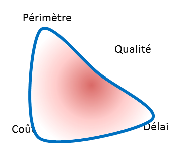

Découverte des valeurs agiles
Créé avec ♥♥♥ en mai 2015
Plan
- En 2 mots
- Quelques rappels historiques
- Le manifeste
- Les 4 valeurs, l'une après l'autre...
- Quelques pratiques
- Pause
- Surprise !
En 2 mots
Pour ceux qui devront partir avant la fin
Définition en une phrase
“Agile development uses feedback to make constant adjustments in a highly collaborative environment.”
— Andy Hunt
Le développement agile utilise les retours (rétroactions) pour s'adapter en permanence dans un environnement hautement collaboratif.
En 2 minutes
C'est ce qui a été demandé à Florent Lothon
devant 1500 personnes au théatre Mogador.
Question de l’animateur :
Florent, qu’est ce que la ‘méthode agile’ ?
Réponse :
Il s’agit d’une méthodologie ...
Quelques rappels historiques
Pour ceux qui sont nés après le 1/1/1970
Au début, tout est facile
Jusqu'à la fin des années 1960, le logiciel:
- est essentiellement codé en assembleur
- consiste en des traitements batchs
- automatise des processus répétitifs
- économise les bits et les cycles CPU

La première crise du logiciel
Fin des années 60, début des 70
- En 10 ans, la puissance des ordinateurs est multiplié par 100, et la productivité du développement par 4
- Premier colloque de Génie Logiciel
- Invention du développement en cascade
- On cherche à industrialiser le processus de développement
La crise encore
Dans les années 90, rien n'a changé (enfin presque)
- La micro-informatique est dans les entreprises
- Les outils d'industrialisation du développement se sont développés
- Les langages COBOL, C, Smalltalk, C++, ADA et bientôt Java
- Les Ateliers de Génie Logiciel, les éditeurs, débogueurs, le makefile
- Les outils de gestion de versions, des exigences, des tests
- Les méthodes aussi
- La programmation structurée, SADT,
- Cap Gemini SDM, SSADM,
- MERISE en France
La crise encore
Le Standish Group publie en 1995 le premier Chaos Report
“Software development projects are in chaos, and we can no longer imitate the three monkeys -- hear no failures, see no failures, speak no failures.”
- 250 milliards de $ dépensés par an aux USA
- Seuls 16,2% des projets sont on-time et on-budget
La métaphore du pont

Cette photo illustre la première page du premier Chaos Report.
La métaphore du pont
Le développement logiciel est assimilé à une pratique d'ingénierie telle que la construction ou la mécanique.
- La conception est la phase créative qu'il est difficile d'estimer.
- La fabrication est la phase la plus coûteuse.
- Donc, une conception très détaillée permet de garantir une fabrication optimale.
Au bout du pont
- Un découpage en multiple phases.
- Des phases découpées en étapes.
- Des documents en abondance et jamais à jour.
- Des équipes de spécialistes sans vue d'ensemble.
- De la sous-traitance, de l'off-shore.
- Un effet tunnel.
- Beaucoup d'énergie passée à estimer, planifier, découper, affecter …
Une ingénierie pas comme les autres
Un groupe d'irréductibles skieurs refuse
l'analogie de la construction.
Coder n'est pas fabriquer.
Fabriquer, c'est compiler.
La fabrication est la phase la moins coûteuse, elle est automatisée.
La conception, phase créative, qui exige de la compétence, va jusqu'à l'écriture du code.
Les méthodes légères
En réaction aux "plan-driven methodologies" ou "méthodes lourdes"
- Unified Process [1994]
- Dynamic systems development method ou DSDM [1994]
- Scrum [1995]
- par Ken Schwaber
- eXtreme Programming [1996]
- par Kent Beck, Ward Cunningham et Ron Jeffries
- Crystal Clear [1996]
- par Alistair Cockburn
- Feature-Driven Development ou FDD [1997]
- par Jeff De Luca
Le manifeste agile
C'est où les pistes ?
2 jours à la montagne
Du 11 au 13 février 2001, 17 "organizational anarchists" se retrouvent à Snowbird dans l'Utah, pour discuter méthodes de développement logiciel.
Ils aboutissent à la signature du Manifeste Agile
même si Martin Fowler, qui est anglais, estime que la plupart des américains ne savent pas
prononcer agile correctement.
The Agile Manifesto
We are uncovering better ways of developing software by doing it and helping others do it.
Through this work we have come to value:
Individuals and interactions over processes and tools
Working software over comprehensive documentation
Customer collaboration over contract negotiation
Responding to change over following a plan
That is, while there is value in the items on the right, we value the items on the left more.
Le Manifeste Agile
Nous découvrons comment mieux développer des logiciels par la pratique et en aidant les autres à le faire.
Ces expériences nous ont amenés à valoriser :
Les individus et leurs interactions plus que les processus et les outils
Des logiciels opérationnels plus qu'une documentation exhaustive
La collaboration avec les clients plus que la négociation contractuelle
L’adaptation au changement plus que le suivi d'un plan
Nous reconnaissons la valeur des seconds éléments, mais privilégions les premiers.
Les individus et leurs intéractions
Le développement est une activité humaine
La compétence de l'individu
Le développement logiciel est une activité créative.
Les individus ne sont pas des ressources interchangeables.
Souvent, le débutant est expert.
Limitons le WIP

La motivation est essentielle
Qu'est-ce qui motive un travailleur du savoir ?

Le travail en équipe
Plusieurs cerveaux font mieux qu'un seul.
Etre agile, c'est ne jamais travailler seul.
La bonne taille d'équipe
- Un seul, c'est pas une équipe.
- Deux, c'est un couple.
- Trois, c'est un contre deux.
- Quatre, c'est un couple contre un autre.
- au delà de Neuf, c'est compliqué d'avoir une seule conversation à table.
La communication

L'environnement
- La colocation de l'équipe est importante.
- Un environnement adapté à la collaboration.
- Un espace pour les réunions.
- Un espace pour les tableaux.
- Les outils et les processus doivent être adaptés à la capacité de l'équipe.
La transparence
Bienveillance. Confiance. Courage.
Liberté de parole. Sincérité. Honnêteté.
Quand la communication est-elle la plus efficace ?
Quand les gens désirent travailler ensemble et font ce qu'il faut pour réaliser l'objectif.
Focus sur le logiciel
Parce que c'est le produit
Les 4 dimensions
du projet idéal

Les 4 dimensions
du projet réel

La qualité n'est pas négociable

Excellence technique
Tests automatiques
Intégration continue
Code propre
Correction des bugs au plus tôt
Simplicité
KISS : Keep It Simple, Stupid
ou l'art de maximiser le travail non fait.
Emergent Design ou Conception Emergente :
- La conception ne doit pas être uniquement en mode top-down.
- N'importe quel membre de l'équipe peut la revoir.
Un truc qui marche
Le fonctionnement réel du système est le principal indicateur d'avancement.
Tout le monde voit clairement l'avancement, y compris le client.
Collaboration avec le client
Ce qui compte est sa satisfaction
De l'idée au produit

Travailler ensemble
Le client (ou son représentant) est présent dans l'équipe.
Il est appelé Product Owner (PO) en Scrum.
Itératif et Incrémental
itératif /i.te.ʁa.tif/ masculin
Qui est répété, fait plusieurs fois.
incrément /ɛ̃.kʁe.mɑ̃/ masculin
Ajout, valeur ajoutée à une autre, en général à plusieurs reprises.
Construire une maison en méthode agile

NON ! Pas comme ça !
Comme ça !

La démonstration
A chaque livraison d'un incrément du logiciel,
une démonstration est organisée avec le client,
le sponsor, les key-users.
La démonstration de chaque incrément permet de
recueillir du feedback régulièrement.
Un résultat adapté
Accueil bienveillant du changement
Le changement c'est maintenant
Pilotage par la valeur

Planning Continu
S'assurer que ce qu'on produit est toujours
ce qui a le plus de valeur.
Ceci impose des repriorisations régulières.
Amélioration Continue
Retour sur le manifeste
On ne s'en lasse pas
Les valeurs
Les individus et leurs interactions plus que les processus et les outils
Des logiciels opérationnels plus qu'une documentation exhaustive
La collaboration avec les clients plus que la négociation contractuelle
L’adaptation au changement plus que le suivi d'un plan
Un autre point de vue
Les valeurs à gauche sont vecteurs de flexibilité
Celles de droite sont vecteurs de lourdeurs
Quelques Pratiques
Un ensemble de pratiques au service de valeurs
Radiateur d'Information
Affichage mural pour diffuser une information pertinente : tableau des tâches, nombre total de tests, ...
- l'équipe n'a rien à cacher (notamment à ses clients)
- l'équipe n'a rien à se cacher: elle admet et confronte ses difficultés
- provoque la discussion
Daily Scrum
Réunion quotidienne d'un quart d'heure, debout.
Qu’as tu fait depuis le dernier scrum ? Qu’est ce que tu dois faire ?
Qu’est ce qui t’empêche de faire ton travail ?
- favorise la circulation d'informations importantes
- permet de se synchroniser
- contribue à la cohésion de l'équipe
Backlog
Liste de toutes les fonctionalités ou tâches nécessaires à la réalisation du projet.
- pour les prioriser (ordonner par ordre d'importance)
- donne la vision d'ensemble
Backlog
Dans le backlog, on trouve, ligne après ligne :
- des anomalies à corriger
- des petites fonctionalités
- des tâches techniques
- des modules entiers à développer
L'item de backlog est une simple phrase qui va être affinée (précisée, détaillée, découpée)
au fur et à mesure du besoin.
User Story
Histoire utilisateur représentant un incrément du logiciel.
Son expression doit pouvoir tenir sur un post'it.
- découpe le travail à faire
- apporte de la valeur au client
- unité de priorisation, de négociation
User Story
Planning Poker
Estimation collective et relative des user stories.
L'estimation est faite en points de complexité ou en taille de T-shirt.
Tout le monde dévoile son estimation au même moment.
- vérifier la faisabilité d'une user story
- concevoir une solution
- estimer pour prioriser
Rétrospective
Réunion régulière de l'équipe pour faire le bilan de la période passée et réfléchir aux améliorations possibles.
- améliore le fonctionnement de l'équipe
- favorise l'auto-organisation
Pause
Surprise
Celui qui ne peut plus éprouver ni étonnement ni surprise est pour ainsi dire mort
Challenge de la Guimauve
Instructions
- 4 à 6 personnes par table
- 20 spaghettis + 1 mètre de scotch + 1 mètre de fil + 1 guimauve
- 9 minutes
- Construire la plus haute structure autoportante (ni tenue ni suspendue) pour porter la guimauve
- Vous pouvez utiliser tout le kit ou seulement une partie
- Vous pouvez couper les spaghettis, le scotch, le fil mais pas la guimauve
- On mesure la hauteur entre la base et la guimauve entière
Résultats
Seconde itération
En 9 minutes comme la première.
Qu'a-t-on appris ?
- Le travail en équipe ?
- A respecter le timeboxing ?
- La définition du fini ?
- A identifier les préjugés cachés ?
- A prototyper ?
The End
- Cette présentation utilise reveal.js de Hakim El Hattab
- Snowbird Tram photo de D. Ramey Logan
{kind=link}